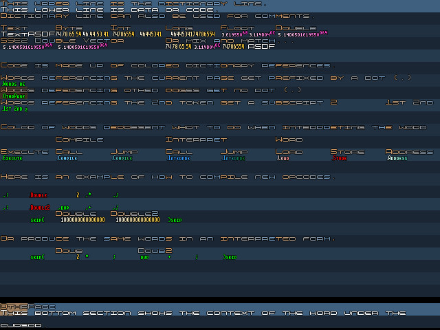

20070919 - Editor Working

Got the editor fully working, 1800 lines of highly factored dense C code (I put multiple statements on one line). Now moving into incorporating the Atom Forth interpreter (which is only one page of assembly), followed by writing the assembler in Atom Forth, and lastly porting the editor and interpreter over to Atom Forth. Will then be able to edit the source code of the editor from within the editor itself, which is great for extending/modifying the editor when I need new keyboard shortcuts or other features!